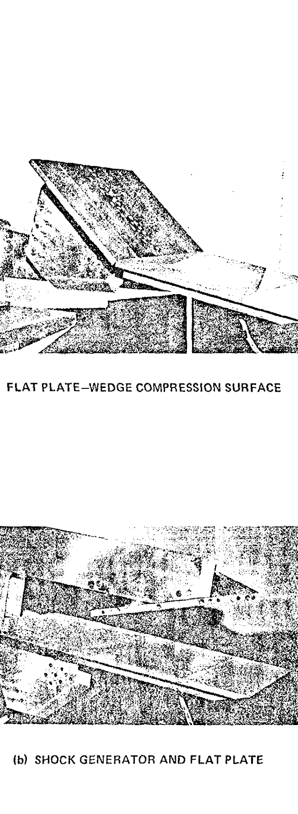
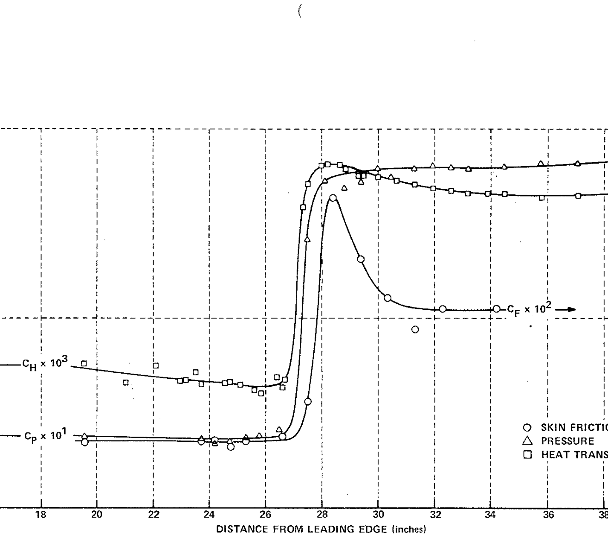
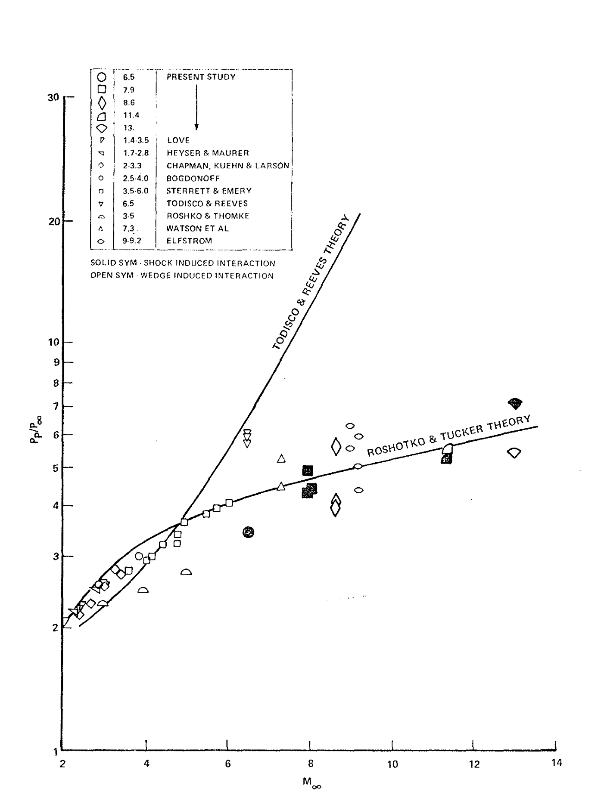
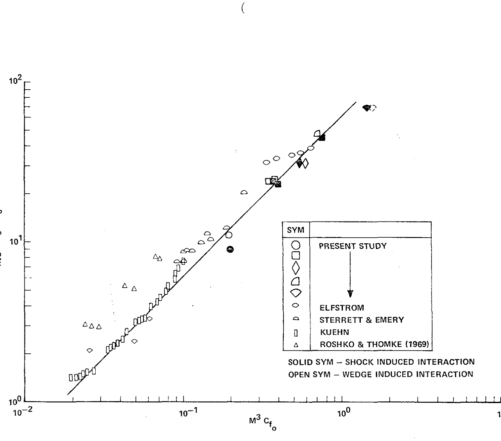

01中文摘要
研究高超声速激波-边界层干扰形成的附着与分离湍流粘性干扰区。对平板-楔压缩拐角和平面斜激波入射平板两类干扰，在 M=6.5–13.0、Re=10×10⁶–100×10⁶、壁面/自由流滞止温度比 0.1–0.4 下测量平均与脉动压力、表面摩阻和传热，并拍摄纹影。直接表面剪切测量表明，湍流边界层分离远早于压力分布出现拐点；激波与楔诱导的初始分离条件可统一关联。分离区长度随 Re 和壁温比增大、随马赫数减小而增大；分离区高度非定常，再附区压力脉动可达自由流动压的十分之一。
02阅读说明
实验研究（AIAA Paper 72-74, 1972, 70页；含 Table I 与 Fig.1-30）。bundle 为整篇 OCR，正文可读、公式与 Table I 数字多处乱码，图注完整；已分5段读至EOF（2520行）。定量值主要取自正文与图注；图内曲线逐点数值无法可靠读取，凡不能确认处均注明“受限于材料”。另发现摘要与正文在脉动幅值/分离点运动量上存在数值不一致（1/3δ vs 2/3δ；0.1q∞ vs 0.2q∞），已如实并列。 文章类型：期刊
03一句话核心与三句话摘要
M6.5–13、Re 10⁷–10⁸高冷壁风洞实验表明：湍流起始分离的压力升与激波/楔机理无关。
- 问题与缺口：高超湍流激波/边界层干扰缺少同时测量平均与脉动压力、摩阻、热流的系统数据，起始分离判据（尤其压力拐点判据）是否有效、Re 与壁温如何影响分离区尺度均存争议（p.2, p.5, p.15-18）。 AI概括
- 方法与核心发现：在 CAL 48"/96" 激波风洞用 40 个压力、28 个摩阻、60 个热流传感器测量楔致与激波致干扰；直接壁面剪切测量表明分离远早于压力拐点出现，起始分离压力升与干扰机理无关，并可依压力升对 M∞³C_f 关联（p.9-11, p.20-21, Fig.24）。 AI概括
- 结论与启示：分离区长度随 M∞ 增大而减小、随 Re 增大（模型安装实验）而增大、对 Tw/T0 依赖弱；再附区 rms 压力脉动可达 0.1–0.2 q∞，源于分离/再附点的非定常运动，因此压力分布不宜单独用于判定起始分离（p.17-18, p.21-25, Fig.28）。 AI概括
04核心内容清单
| 要点 | 类型 | 重要性 | 原文依据 | 属性 |
|---|---|---|---|---|
| 实验矩阵覆盖 M∞=6.5、7.9、8.6、11.3、13.0（另尝试 14.7）、Re_L=10×10⁶–100×10⁶、Tw/T0=0.1–0.4，包含楔致与激波致两类干扰。 | 实验条件 | A | p.2 摘要; p.9, Section 2 | 原文明确 |
| 压力频响需求约 100 kHz，实际用 PCB 传感器测至 120 kHz；摩阻/热流需至少 10 kHz 才能跟随分离点运动，铂薄膜热流计频响 >50 kHz。 | 测量技术 | A | p.10-11, Figs.3-4 | 原文明确 |
| 分离首先出现在层流底层，形成清晰分离泡；分离激波起始于边界层底部并始终包含在边界层内，直至与再附压缩合并。 | 流场结构 | A | p.15-16, Fig.8a | 原文明确 |
| 与层流分离区不同，湍流分离区热流穿过分离区升高，并在再附压缩前形成明确平台。 | 热流特征 | A | p.15, Fig.9 | 原文明确 |
| 总压升相同时，楔致与激波致充分分离区的压力、热流、摩阻分布相似。 | 相似性 | A | p.16, Figs.14-15 | 原文明确 |
| 起始分离用“区内仅一点时间平均壁面剪切为零”定义；Kuehn 压力拐点判据显著高估所需压力升。 | 判据 | A | p.19-20, Section 3.4 | 原文明确 |
| 以剪切/纹影判定时，起始分离压力升比以压力分布判定小 10–30%。 | 定量结论 | A | p.20 | 原文明确 |
| 起始分离压力升与干扰机理无关；楔致与激波致的表观差异可由两级压缩效率解释。 | 核心结论 | A | p.20-21, Fig.23 | 原文明确 |
| 起始分离数据可依压力升对 M∞³C_f 关联（Chapman 型），至 M=11.3 符合，M=13 数据偏低。 | 关联 | A | p.21, Fig.24 | 原文明确 |
| 平台压力随 M∞ 的趋势符合 Tucker-Roshko 理论；低 M 数据遵循 Enrich-Popinski，M>9 趋向 Erdos-Pallone 关联；平台热流可由平台压力比估算。 | 平台量关联 | B | p.16-17, Figs.17-19 | 原文明确 |
| 分离区长度随 M∞ 增大而减小、对 Tw/T0 依赖弱；Re 效应在模型实验与风洞壁实验间方向相反，尚未解决。 | 尺度趋势 | A | p.17-18, Figs.20-22 | 原文明确 |
| 再附区 rms 压力脉动可达 0.1–0.2 q∞，p_rms/p̄ 近分离/再附点达 0.7；分离/再附点运动量摘要与正文分别记为 1/3δ 与 2/3δ；主频 Strouhal 约 5×10⁻⁴。 | 非定常特性 | A | p.2, p.15, p.24, Figs.28-30 | 原文明确 |
05引言：研究问题与领域缺口
研究对象是二维平板湍流边界层与外部斜激波、以及平板-楔压缩拐角之间的粘性干扰区，覆盖附着、起始分离与充分分离三种状态（p.2 摘要）。工程背景：高超飞行器压缩面、进气道与舵面的气动热环境预测需要可靠的干扰区尺度、平台压力/热流与再附峰值判据。领域缺口：已有干扰区研究“with few exceptions”使用频响很有限的仪器，无法同时获得脉动信息；起始分离的常用定义（Kuehn 压力拐点判据）在湍流/非定常条件下是否成立未被检验；Re 对分离区长度的影响在不同风洞间互相矛盾，模型与风洞几何、边界层非平衡均可能是原因（p.15-18）。作者还指出，层流干扰区中分离与再附由模型几何控制，而平板-楔/入射激波构型中二者由流动自身决定，更适合提取标度律（p.12）。目标：（1）在 M∞ 6.5–13、Re_L 10×10⁶–100×10⁶、Tw/T0 0.1–0.4 范围内系统测量平均与脉动场；（2）检验起始分离是否与干扰机理无关；（3）给出平台压力、平台热流、再附热流与起始分离的关联；（4）刻画非定常特性（p.9-12）。
06流动条件与几何构型
| 项目 | 数值/描述 | 依据 | 备注 |
|---|---|---|---|
| M∞=6.5 | 标称来流马赫数；起始分离纹影见 Fig.10；分离区长度随 Re 变化见 Fig.21 | p.9; p.20; Fig.10, Fig.21 | 对应 Re_L 见 Table I（OCR 残缺） |
| M∞=7.9 | 标称来流马赫数；Re 对比纹影见 Fig.21 | p.9; p.18, Fig.21 | Table I 数字不可靠读取 |
| M∞=8.6 | 标称来流马赫数；楔致 M=8.6、Re_L=22.5×10⁶、楔角 30°/36° 的平均场见 Fig.9a/9d；激波致 M=8.6、Re_L=22.5×10⁶、激波发生器 17.5° 见 Fig.12c | p.9; Fig.9, Fig.12 | 图注数值原样引用 |
| M∞=11.3 | 标称来流马赫数；楔致 Re_L=33×10⁶、楔角 36° 的平均场见 Fig.14b；平台/起始分离关联中含该工况 | p.9; Fig.14b; p.21 | M=11.3 为 Chapman 型关联仍成立的上限 |
| M∞=13.0 | 标称来流马赫数；楔致 Re_L=17×10⁶、楔角 36° 见 Fig.14a；激波致 Re_L=4.7×10⁶、激波发生器 20° 的干扰长度-雷诺数关系见 Fig.15a | p.9; Fig.14a; Fig.15a | M=13 起始分离数据低于 M∞³C_f 关联线（p.21） |
| M∞=14.7 | 通过改变喷管几何可达到，列入试验计划 | p.9 | 正文给出数据有限；p.24 另提到 Mach 15 的过渡态干扰纹影（Fig.29），非标称工况 |
| Re_L | 10×10⁶–100×10⁶（结论再次确认） | p.2; p.9; p.25 | 局部图例中出现 4.7×10⁶、17×10⁶、22.5×10⁶、33×10⁶ 等 |
| Re_δ | 本文实验覆盖 10⁴–10⁵ | p.18 | 用于 Fig.25 的楔角-起始分离 Re 依赖讨论 |
| Tw/T0 | 0.1–0.4（通过驱动压力与入射激波马赫数改变） | p.2; p.9 | 强冷壁范围；该参数对分离长度影响弱（p.17） |
| 楔角 | 最大 36°；图中使用 27°、30°、33°、36° 等系列 | p.9; Fig.9a/9d, Fig.14a/14b | 覆盖附着、起始分离、充分分离 |
| 激波发生器角 | 最大 20°；图中使用 17.5°、19.8°/20° 等 | p.9; Fig.12c, Fig.15a | 入射点可平移，平行/垂直平板方向均可调 |
| 模型几何 | 平板宽 18 in；楔长 12 in；可换前缘 15、28、48 in；二维构型 | p.9 | 展向 24 in 或加侧板无可测变化（p.13） |
| 风洞与试验时间 | CAL 48 in 风洞 >25 ms；96 in 风洞单位 Re 最高 80×10⁶/ft，tailored interface | p.9, Fig.1 | 平均场在稳流建立后 1 ms 内形成（p.12） |
| 边界层状态 | 自然转捩；M6.5/7.9/8.6 在前缘数英寸内完全湍流；M11.3 转捩约 12 in、M13 约 24 in（有效湍流长度 32 in 与 26.5 in） | p.14 | 转捩点定义为热流达到最大的位置 |
| 动态压力载荷 | 最高约 15000 lb/ft² | p.10 | 风洞关机时动态载荷曾撕裂摩阻计膜片 |
07核心现象与关键参数
| 参数 | 定义 | 数值 | 关系/说明 | 依据 |
|---|---|---|---|---|
| M∞ | 自由来流马赫数 | 6.5、7.9、8.6、11.3、13.0（计划含 14.7） | 控制激波角/压升、分离区长度与起始分离压力升 | p.9; p.25 |
| Re_L | 以来流条件与模型长度定义的雷诺数 | 10×10⁶–100×10⁶ | 影响分离区长度（方向存在争议）与起始分离 | p.2; p.9; p.25 |
| Tw/T0 | 壁温与自由来流总温之比 | 0.1–0.4 | 对分离区长度影响弱，与层流干扰区形成对比 | p.2; p.9; p.17 |
| Re_δ | 以边界层厚度为长度的雷诺数 | 实验覆盖 10⁴–10⁵ | Fig.25 中作为起始分离楔角的横坐标 | p.18; p.21, Fig.25 |
| δ | 当地边界层厚度 | 随测站与前缘长度变化，具体值文中未逐工况给出 | 分离/再附点运动量以 δ 归一（1/3δ 或 2/3δ） | p.2; p.15 |
| 楔角 θ_w | 平板-楔压缩面相对平板的偏转角 | 至 36° | 与激波发生器角共同参数化干扰强度 | p.9 |
| 激波发生器角 θ_s | 外激波发生器相对来流的偏转角；文中流动偏转角取其二倍 | 至 20° | 控制入射/反射两级压缩的总压升 | p.9; p.20 |
| M∞³C_f | Chapman 型起始分离关联参数，C_f 为上游湍流边界层摩阻系数 | Fig.24 横轴；数据覆盖约 10¹–10³（读图估计） | 压力升 (p_w-p_e) 与之成比例（量级论证） | p.21, Fig.24 |
| 分离区长度 L_sep | 分离点到再附点的流向距离 | 随 M∞、Re、Tw/T0 变化；具体长度文中以 in 给出于图，未汇总 | 随 M∞ 增大而减小；Re 效应未定 | p.17-18, Figs.20-22 |
| p_rms/q∞ | 壁面压力脉动均方根与来流动压之比 | 再附区最大 0.1–0.2（摘要/结论 0.1；正文 0.2） | 在分离/再附区最大，p_rms/p̄ 可达 0.7 | p.2; p.24; p.25, Fig.28 |
| Strouhal 数 | Fig.30 横轴，记为 fδ/U∞（读图；定义文字受限于OCR无法确认） | 最大功率对应约 5×10⁻⁴；功率在 10⁻³ 以下仍增加 | 表征分离/再附点运动的主频 | p.24, Fig.30 |
08方法与数据
设施：Cornell Aeronautical Laboratory（CAL）48 英寸与 96 英寸激波风洞，低入射激波马赫数下采用 tailored interface，48 英寸风洞试验时间 >25 ms，96 英寸风洞单位雷诺数最高 80×10⁶/ft（p.9, Fig.1）。来流条件：标称 M∞=6.5、7.9、8.6、11.3、13.0、14.7（改变喷管几何），Re_L 10×10⁶–100×10⁶，Tw/T0 0.1–0.4（改变驱动压力与入射激波马赫数），详表见 Table I（p.9；Table I 数字 OCR 残缺）。模型：18 英寸宽平板，布置 40 个压力、28 个摩阻、60 个热流密排传感器并同步采集；激波发生器可调至 20°且可平移以控制入射点；平板-楔模型楔长 12 英寸、可调至 36°；三种可换前缘长度 15、28、48 英寸（p.9, Fig.2）。测量：CAL 自制 PZT 压电传感器测平均压力（可跟至 10 kHz）；PCB 齐平安装传感器测平均与脉动压力至 120 kHz，专用锁紧安装抑制共振并用镀铝 Mylar 隔热（p.10, Fig.3）。CAL 直接壁面剪切传感器：双压电陶瓷梁支撑齐平膜片，第三梁作加速度补偿，电路抑制热与正/横向压力效应，内置 FET 阻抗变换；动态载荷最高 15000 lb/ft²（p.10, Fig.4）。热流：Pyrex 基底上的铂薄膜电阻温度计，频响 >50 kHz，按半无限平板理论并由模拟网络直接输出热流（p.11）。记录：NAVCOR 48 通道数字系统（低频）与 18 通道 AMPEX FM（0–1 MHz，记录脉动），经 A/D 后用 FFT 求统计量（p.11）。流动建立与二维性：分离湍流干扰平均特性在稳流建立后 1 ms 内形成；模型展向由 18 英寸增至 24 英寸或加侧板对中心线特性无可测影响（p.12-13）。起始分离定义：相互作用区内仅一点的时间平均壁面剪切为零（p.19）。不确定度：文中未提及定量测量不确定度。
| 项目 | 内容 | 依据 | 备注 |
|---|---|---|---|
| 风洞设施 | CAL 48 in 与 96 in 激波风洞；tailored interface；48 in 试验时间 >25 ms；96 in 单位 Re 最高 80×10⁶/ft | p.9, Fig.1 | 低入射激波马赫数下获得长试验时间 |
| 模型 | 18 in 宽平板 + 可平移激波发生器（≤20°）；12 in 楔（≤36°）；前缘 15/28/48 in | p.9, Fig.2 | 两类干扰在同一平板上实现，便于对比 |
| 平均压力测量 | CAL 自制 PZT 压电传感器，频响可至 10 kHz | p.10 | 传感器-孔组合限制频响 |
| 脉动压力测量 | PCB 齐平传感器，平均与脉动至 120 kHz；专用安装座防共振，镀铝 Mylar 隔热 | p.10, Fig.3 | 为获得可靠功率谱，要求频响至 100 kHz |
| 直接壁面剪切测量 | CAL 双压电梁支撑膜片式剪切天平，第三梁加速度补偿，FET 阻抗变换，地震质量-橡胶悬挂 | p.10, Fig.4 | 用于判定起始分离与分离/再附点位置 |
| 热流测量 | Pyrex 基底铂薄膜电阻温度计，频响 >50 kHz，半无限平板理论+模拟网络 | p.11 | 低导热基底抑制横向导热 |
| 数据采集与处理 | NAVCOR 48 通道数字记录（低频）+ AMPEX 18 通道 FM（0–1 MHz）；A/D 后 FFT 求统计量与功率谱 | p.11 | 脉动数据以模拟形式记录后处理 |
| 起始分离定义 | 相互作用区内仅一点的时间平均壁面剪切为零 | p.19 | 与 Kuehn 压力拐点判据对比 |
| 流场显示 | 纹影照片；油流（引用的对比研究） | p.15-21, Figs.8, 10, 13, 20-22, 29 | 本文以纹影+剪切判定起始分离 |
| 流动建立与二维性检验 | 平均场在稳流建立后 1 ms 内形成；展向 18→24 in 或加侧板无可测变化 | p.12-13 | 确保有限试验时间内数据有效 |
| 不确定度 | 文中未提及定量不确定度或误差分析 | 全文 | AI概括 |
09核心推导与公式
原文未给出从守恒律出发的完整解析推导；以下仅列出材料中可核对的定义或建模链，不补写教科书推导。
本文为实验研究，没有形式化理论推导。与“推导”最接近的是 3.4 节为组织起始分离关联而给出的量级平衡论证：壁面附近惯性力与粘性力平衡给出剪切尺度，Chapman 分析中相互作用长度 L 约为 M∞δ，由此压力升与 M∞³C_f 成比例，用于 Fig.24 的横坐标。该论证的中间代数在 bundle 的 OCR 中严重残缺（p.21 出现多处乱码），无法逐式复原，故不补写推导。
关键假设
- 二维、定常平均流（脉动另作统计分析）（p.9, p.12）
- 平衡湍流边界层，上游边界层特性可用 C_f、δ 表征（p.12, p.18）
- 壁面附近惯性-粘性力平衡，压力升由剪切层位移决定（p.21）
- 相互作用长度尺度 L≈M∞δ（Chapman 分析精神）（p.21）
- 楔致与激波致干扰可用同一总压升比较（p.20-21）
适用边界：量级论证不是严格推导：未给出比例常数、未定义 C_f 的参考温度与参考长度、未说明压力升用绝对压差还是无量纲压比；OCR 使原式无法逐项核对；该关联在 M=13 失效的原因文中未解释。
10结果：主要发现与关键证据
（1）平均场结构：分离首先出现在层流底层，可见清晰分离泡（Fig.8a）；分离区初始发展是向层流底层内延伸，分离激波与再附压缩在边界层内合并为单一激波；与层流干扰不同，湍流分离激波起始于边界层底部并一直包含在边界层内（p.15-16）。压力、热流、摩阻在回流区形成明确平台，在分离/再附区出现大梯度；热流穿过分离区升高至再附前的平台（p.15, Fig.9）。（2）楔致与激波致对比：总压升相同的充分分离流，其表面压力、热流、摩阻分布相似（p.16, Figs.14-15）。（3）平台压力：随 M∞ 的变化趋势符合 Tucker-Roshko 简单理论，与 Todisco-Reeves 理论差别明显；按 Chapman 参数与 M∞ 作图，低马赫数数据遵循 Enrich-Popinski 关联，M>9 的数据趋向 Erdos-Pallone 关联（p.16-17, Figs.17-18）；平台热流可由平台压力比计算（p.17, Fig.19）。（4）分离区长度：M 6–13 内随 M∞ 增大而减小，随 Tw/T0 减小而略减（效应弱）；对 Re 的依赖“remains unresolved”：风洞壁实验给出 Re 增大使干扰区变短，而模型安装实验（含本文）给出 Re 增大使分离区变长，二者定量不一致（p.17-18, Figs.20-22）。（5）起始分离：Kuehn 压力拐点判据显著高估所需压力升，尤其外激波情形；以壁面剪切与纹影判定时，起始分离压力升比压力分布判定小 10–30%（p.20）。楔致与激波致的表观差别来自两级压缩（入射+反射激波）比单楔压缩更有效；换算为总压升后二者几乎相同（p.20-21, Fig.23）。Fig.24 以压力升对 M∞³C_f 关联两类数据及其他来源低马赫数数据，测量遵循“Chapman-like”标度至 M=11.3，M=13 数据落于线下（p.21, Fig.24）。随 M∞ 增大起始分离压力升增大，但高超下诱发分离的流动偏转角对 M∞ 不敏感；Re 效应弱，本文与 Kuehn、Sterrett-Emery、Elfstrom 均显示 Re 增大使附着区更接近分离，而 Roshko-Thomke 风洞壁数据呈相反趋势（p.21, Fig.25）。（6）非定常：分离/再附点可绕平均位置大幅摆动（摘要称 1/3δ，正文称 2/3δ），再附区 rms 压力脉动可达 0.1–0.2 q∞（摘要/结论称 0.1，正文称 0.2），p_rms/p̄ 在分离与再附附近可达 0.7；最大功率对应 Strouhal 数约 5×10⁻⁴，功率在 St<10⁻³ 仍增加（与 Coe-Rechtien 一致，与 Speaker-Allman 相反）（p.2, p.15, p.24, Figs.28-30）。
| 发现 | 证据 | 证据类型 | 强度 | 位置 | 属性 |
|---|---|---|---|---|---|
| 湍流边界层分离远早于压力分布出现拐点；以压力拐点判定起始分离会显著高估所需压力升。 | 直接壁面剪切测量与纹影显示分离起始时压力/热流分布尚无明显变化；摘要明确“separation occurred well before an inflection point was observed”；Kuehn 判据“seriously overpredicted”（p.19-20）。 | 判据检验 | 强 | p.2; p.19-20 | 原文明确 |
| 以剪切/纹影判定的起始分离压力升比以压力分布判定的小 10–30%。 | 正文给出定量区间：“from 10 to 30 percent smaller”（p.20）。 | 定量对比 | 强 | p.20 | 原文明确 |
| 起始分离的压力升与干扰机理（楔压缩 vs 外激斜激波）无关。 | Fig.23 显示表观差别，但换算为总压升后“almost identical”；p.21 明确“independent of the mechanism”；结论重复该点（p.25）。 | 核心结论 | 强 | p.20-21, p.25, Fig.23 | 原文明确 |
| 两类干扰的起始分离数据可统一关联为压力升对 M∞³C_f 的 Chapman 型标度，至 M=11.3 成立，M=13 偏低。 | Fig.24 含本文楔致/激波致数据及其他来源低马赫数数据；“follow the Chapman like scaling law up to Mach 11.3, with the measurements at Mach 13 falling below this line”（p.21）。 | 关联 | 强 | p.21, Fig.24 | 原文明确 |
| 总压升相同的楔致与激波致充分分离区，其压力、热流、摩阻分布相似；平台压力随 M∞ 的趋势符合 Tucker-Roshko 理论。 | p.16 文字与 Figs.14-15；平台压力趋势对比 Todisco-Reeves 理论（p.16-17, Fig.17）。 | 相似性与平台 | 强 | p.16-17, Figs.14-15, 17 | 原文明确 |
| 分离区长度随 M∞ 增大而减小、对 Tw/T0 依赖弱；Re 效应在风洞壁实验与模型实验间方向相反，尚未解决。 | p.17 明确 M 与 Tw 趋势；p.17-18 给出 Re 争议与两类实验方向；结论再次陈述 M 趋势（p.25）。 | 尺度趋势 | 中 | p.17-18, p.25, Figs.20-22 | 原文明确 |
| 高超湍流分离区高度非定常：再附区 rms 压力脉动达 0.1–0.2 q∞，分离/再附点运动可达 δ 量级，主频 Strouhal 约 5×10⁻⁴。 | 正文“two tenths of the dynamic pressure”“two thirds of a boundary layer thickness”“5×10⁻⁴”；摘要与结论分别记为 one tenth、one third（p.2, p.15, p.24, p.25）。 | 非定常 | 强 | p.2; p.15; p.24; p.25, Figs.28-30 | 原文明确 |
| Spalding-Chi 半经验方法在低高超马赫数尚可，但在 M=13 显著低估热流与摩阻；Colburn 雷诺类比因子比实测大约 20%，Bertram-Neal 修正更接近。 | p.13-14 与 Fig.5、Fig.6。 | 方法评估 | 中 | p.13-14, Figs.5-6 | 原文明确 |
11机制解释与论证链
机制链条（AI概括，依据 p.15-16、p.21、p.24）：前提——高超湍流边界层很薄、分离首先发生在层流底层；证据——纹影显示分离泡始于底层，分离激波在边界层内产生并与再附压缩合并，压力分布在分离初期无明显特征；推论——粘性-无粘干扰几乎完全嵌在原边界层内，压力对小的分离区不敏感，而壁面剪切直接反映反向流出现，因此剪切判据给出的起始分离压力升比压力判据低 10–30%；由于分离起始由底层局部剪切决定，与产生逆压的装置（楔或入射激波）无关，只要总压升相同即可对应同一状态；结论——两类干扰可用同一压力升-M∞³C_f 关联描述。非定常机制：来流湍流扰动与分离/再附激波相互作用，经该处极大压力梯度放大，导致分离点、再附点整体前后运动（可达 δ 量级），形成再附区 0.1–0.2 q∞ 的压力脉动和低频占优的功率谱（p.24）。
12讨论：结论、贡献与局限
机制解释（AI概括，依据 p.15-16、p.24）：分离从层流底层开始，底层位移厚度增长使外区气流偏转，形成嵌入边界层内的分离激波；由于整个粘性-无粘干扰几乎发生在原边界层内，压力信号对分离起始不敏感，分离点要“fed well forward”后才在压力/热流分布上显现。压力分布判据因此系统性高估起始分离压力升；直接剪切测量能捕捉到时间平均剪切的零点，是更可靠的判据。非定常性来源于激波-湍流相互作用：来流湍流扰动经分离/再附区的大压力梯度放大，造成分离点与再附点整体运动，从而产生 0.1–0.2 q∞ 的壁面压力脉动和低频占优的功率谱。作者据此质疑：在如此强的非定常背景下，纯平均流模型能否充分描述高超湍流分离区（p.23）。关于 Re 趋势的争议，作者认为风洞壁边界层受喷管下游有利压力梯度影响，可能在下游 60–100δ 内仍未达到平衡，总温-速度关系偏离 Crocco 关系，因此风洞壁测量不宜直接用于判定 Re 趋势（p.22）。意义：给出楔致与激波致干扰在等总压升下的相似性，为统一关联与建模提供依据；给出平台压力/热流与起始分离的工程关联。局限：二维、固定几何；Tw/T0 仅 0.1–0.4；压力判据与剪切判据的差异未给出统一修正；Re 趋势未获解释；未给出测量不确定度。
作者结论
作者结论（p.25）：在 M∞ 6.5–13、Re_L 10×10⁶–100×10⁶ 范围内获得了平板-楔与入射激波两类湍流干扰区的平均与脉动压力、摩阻、热流数据。以壁面剪切为判据的起始分离表明，两类干扰的起始分离条件与机理无关，可写成压力升对 M∞³C_f 的关联；压力测量无法准确判定起始分离。总压升相同的楔致与激波致分离区具有相似的压力、热流、摩阻分布，并给出了平台压力与热流（含再附热流）的关联。分离区长度随 M∞ 增大而减小、随 Re 与 Tw/T0 减小而减小（后两者趋势弱）。再附区观测到约为来流动压十分之一量级的 rms 压力脉动，作者认为源于激波-湍流相互作用诱发的分离/再附点非定常运动。
主要贡献
- 首次在 M6.5–13、Re 10⁷–10⁸、Tw/T0 0.1–0.4 范围同步测量湍流干扰区的平均与脉动压力、直接壁面剪切与热流（p.2, p.9-11）。
- 用直接剪切测量证明压力拐点判据会高估高超起始分离压力升 10–30%，并给出基于时间平均剪切为零的起始分离定义（p.19-20）。
- 证明楔致与激波致起始分离在等总压升下一致，给出压力升-M∞³C_f 统一关联（p.20-21, Fig.24）。
- 给出平台压力、平台热流与再附热流的工程关联，并指出低 M 与 M>9 分别遵循不同已有理论（p.16-17, Figs.17-19）。
- 揭示高超湍流分离区的强非定常性（0.1–0.2 q∞ 脉动、St≈5×10⁻⁴），并对风洞壁与模型安装实验的 Re 趋势矛盾给出边界层非平衡解释（p.22-24）。
局限与未解决问题
实验/作者局限：仅二维构型；Tw/T0 仅 0.1–0.4；楔角/激波角范围有限；未给出定量测量不确定度；Re 对分离长度的影响未解决，风洞壁与模型实验方向相反；起始分离关联在 M=13 失效且原因未解释；M=14.7/15 仅有少量或过渡态数据。AI识别的文本问题：（1）摘要称分离/再附点运动为 1/3δ、rms 压力为 0.1 q∞，正文 p.15 称 2/3δ、p.24 称 0.2 q∞、结论 p.25 又称 0.1 q∞，数值不一致，本文并列保留；（2）Table I 数字与摘要关联式 OCR 残缺，未据其给出定量值；（3）Fig.30 的 Strouhal 数定义只能读图，文字定义无法确认。
13对高速流动与工程的意义
工程意义：为高超飞行器压缩面/舵面/进气道干扰区的热流与压力载荷预测提供了一套可直接使用的关联：起始分离可用压力升-M∞³C_f 判断，平台压力/热流可相互推算，再附热流峰值需按平台压力比估计；同时提醒不能仅凭压力分布判定分离起始，否则会低估分离范围与热载荷（AI推断，依据 p.20-21）。建模意义：楔致与激波致在等总压升下的相似性支持用统一参数化模型描述两类干扰；强非定常性（0.1–0.2 q∞、St≈5×10⁻⁴）意味着平均流模型可能不足，需在湍流模型或工程载荷谱中考虑分离点运动（p.23-24）。实验意义：给出了高超冷壁湍流干扰的基准数据集与测量方法（直接剪切、>50 kHz 热流、120 kHz 压力），可用于验证 CFD。不能回答：三维/有限展长、粗糙壁、真实气体、强烧蚀、以及 Re 趋势的最终判定。
14核心图件




15可引用原文素材
| 原文短句 | 可支持的观点 | 位置 | 使用建议 |
|---|---|---|---|
| “separation occurred well before an inflection point was observed in the pressure distribution” | 压力拐点判据滞后于真实分离起始 | p.2 摘要 | 说明本文核心判据发现的原文依据 |
| “the pressure rise to induce incipient separation is independent of the mechanism by which it is promoted” | 起始分离与干扰机理无关 | p.21 | 全文核心结论的标准表述 |
| “from 10 to 30 percent smaller than if the separation criteria were based on changes in the pressure distribution” | 剪切判据与压力判据的定量差异 | p.20 | 引用判据偏差时使用 |
| “Separation is first observed in the laminar sublayer” | 分离始于层流底层 | p.15 | 描述分离起始位置时引用 |
| “The influence of Reynolds number on the length of the separated regions remains unresolved” | Re 效应存在争议 | p.17 | 讨论尺度律不确定性时引用 |
| “could reach as large as two tenths of the dynamic pressure” | 再附区 rms 压力脉动量级 | p.24 | 引用非定常强度时使用（注意与摘要 0.1 不一致） |
| “the separation point can move as much as two thirds of a boundary layer thickness about a mean position” | 分离点运动幅度 | p.15 | 说明非定常运动尺度（注意与摘要 1/3 不一致） |
| “the pressure rise to incipient separation increases with increased Mach number” | 起始分离压力升随 M∞ 增大 | p.21 | 描述 M∞ 趋势时引用 |
16最终核验
| 核验项 | 结论 |
|---|---|
| 仅基于全文 | 是。仅使用 bundle 文本、图注与 Fig.16 图像；未引用外部知识补全数据。 |
| A 级要点有依据 | 是。A 级要点均给出页码、节号或图号；关键原句已用 grep 定位到具体行并核对上下文。 |
| 属性标注 | 是。three_sentence、core_points、findings 逐条标注【原文明确】/【AI概括】/【AI推断】。 |
| 覆盖范围 | IMRaD 四节、conditions、key_parameters、methods、derivation、mechanism、findings、quotes、figures、verification 均已填写；bundle 2520 行已分5段读至 EOF，并读图 fig16_p64.png。 |
| 无编造 | 未编造页码、图号、公式或数据。Table I 与摘要关联式 OCR 残缺处明确写“受限于材料”；图内逐点数值未虚构，读图估计处已注明。 |
需回原文确认
- 为何 M=13 的起始分离数据低于 M∞³C_f 关联线？文中未解释。
- Re 对分离区长度的效应为何在风洞壁与模型安装实验间方向相反？作者仅提出边界层非平衡假说，未验证。
- 摘要（1/3δ、0.1q∞）与正文（2/3δ、0.2q∞）的数值不一致，哪个代表最终结果？
- Table I 的具体来流条件（各工况 Re、Tw/T0、δ）因 OCR 残缺无法读取，需回原 PDF。
- Fig.30 的 Strouhal 数定义（fδ/U∞ 或其他）无法从文本确认。
- 起始分离关联式的完整形式与比例常数未能从 OCR 恢复。
- Tw/T0 仅覆盖 0.1–0.4，更强冷壁或近绝热壁下趋势是否延续？文中未提及。
17关联文献
依据标签、板块、构型与作者脉络自动关联，可据此追踪同一问题的前序与后续工作。
18引用格式
选择期刊风格后复制；出处保留原刊名。BibTeX 可直接用于 LaTeX。
引用格式
Holden, M. S. 1972 Shock wave-turbulent boundary layer interaction in hypersonic flow. 10th Aerospace Sciences Meeting. https://doi.org/10.2514/6.1972-74
PDF上传 PDF 并更新本页
本页缺少全文、摘要或图件时，可在浏览器本地补入 PDF。解析完全在本机完成，不上传网络；完成后会更新本页的 PDF 打开链接、原摘要、IMRaD 机器抽取、关键句与含图页面。复杂的公式语义与中文深度解读仍以原文和既有精读记录为准。
Zotero 笔记摘录
给出了湍流分离的初始分离判据，用时间平均表面剪切力在相互作用区的某一点为0作为初始分离